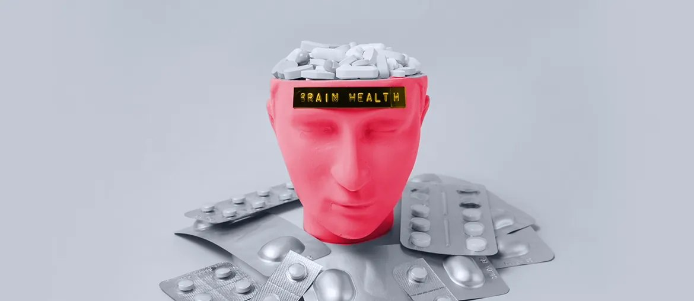

1
Two-week platform map
Map API boundaries, Drupal replacement modules, sync paths, and one safe migration slice with Nourish engineers.
Platform proposal
A focused bridge squad for PHP, Go, Vue, QA, and AWS work across the Nourish care platform.
Why we're here: saw Nourish is hiring a Tech Lead for PHP and Go. That points to API platform ownership, legacy migration, and delivery load on Nick's team.
The Tech Lead search says Nourish is not just adding engineers. You are moving more care workflows onto an API-first platform while older Drupal paths still need support. That can slow decisions on API design, sync, testing, and release order. If the gap stays open, carers may keep feeling platform issues in login, notes, handovers, and medication flows.
Map API boundaries, Drupal replacement modules, sync paths, and one safe migration slice with Nourish engineers.
Ship one bounded API or Vue module slice, with weekly demos and decisions recorded for the incoming lead.
Automate login, offline sync, notes, handover, and medication paths before each GitHub Actions release.
Leave runbooks, tests, and architecture notes so the permanent Tech Lead inherits a moving project.

Elinext took over a healthcare platform built on older vendor work, then handled PHP, MySQL, AWS, data, and DevOps.
Read case study
A healthcare web platform using Symfony, PHP, Vue, MySQL, REST, RabbitMQ, AES encryption, and Amazon EC2.
Read case study